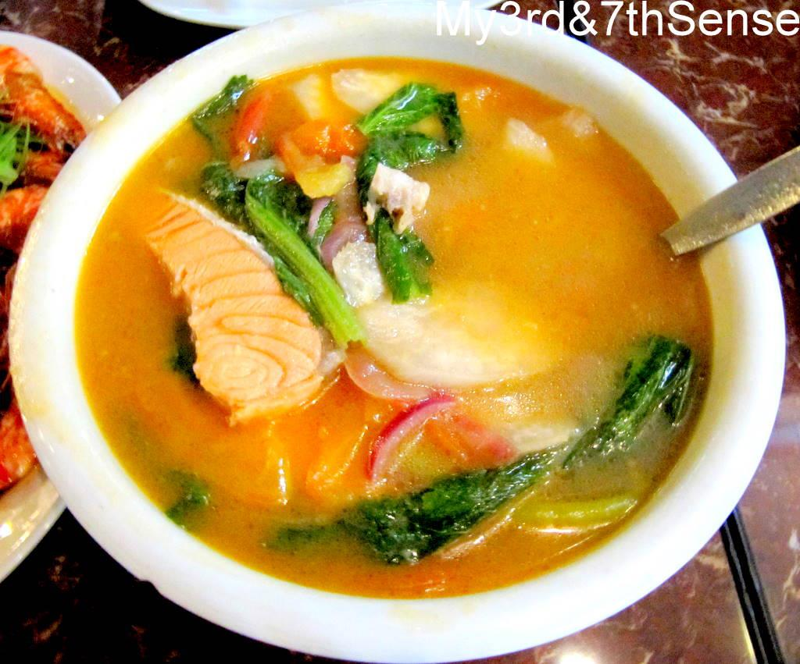

RECIPE FOR FISH
Ingredients
- 8 ounce tomato sauce
- 1 medium onion chopped
- 1 teaspoon white pepper
- 3-4 cups of water
- 3 pounds(1.4kg) white fish cut up in steaks
- ¼ cup(60ml) cooking oil
- salt
PROCEDURE
- Wash the fish carefully, drain, and pat dry with paper towels.
- Heat the oil in the medium saucepan; add the onion ,wait for about a minute.
- Pour tomato sauce, white pepper and bouillon powder. Stir for about a minute and let it simmer for about 10-15 minutes. Add about 3 cups of water season with salt according to preference and stir .
- Add fish steaks and white pepper one at a time. Simmer until the fish is flaky and cooked through, about 10 minutes. Adjust thickness of soup with water , salt and more spices
SERVING
Serve when hot with white rice...................
